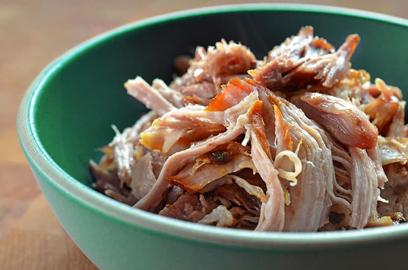

Instant Pot Kalua Pig

Description
Traditional Hawaiian kalua pig plate lunch cooked in a pressure cooker. Enjoy with cabbage, rice, and lomi salmon
Ingredients
- 3 bacon slices
- 5 pounds bone-in pork shoulder roast
- 1½ tablespoons Red Hawaiian Coarse Sea Salt or ~1 tablespoon Red Hawaiian fine sea salt
- 5 peeled garlic cloves
- 1 cup water
- 1 cabbage cut into wedges
Steps
- Press the “Sauté" button and add bacon to your Instant Pot. Brown bacon on both sides.
- Slice pork into 2-3 pieces and create slits in pork to add a piece of garlic clove.
- Use 3/4 teaspoon of medium-coarse salt for every 1 pound of meat. Sprinkle evenly over the pork.
- Add pork into instant pot placed evenly on bacon slices.
- Pour in a cup of water then cover and lock the lid.
- Set instant pot to cook for 90 minutes under high pressure.
- Once the instant pot is done cooking and has depressurized
- Transfer the cooked pork to a large bowl and adjust the seasoning with water or salt if needed.
- Add cabbage into instant pot and replace the lid and cook the cabbage under high pressure for 1-5 minutes.
- Shred the pork, mix in cabbage, and serve over rice.